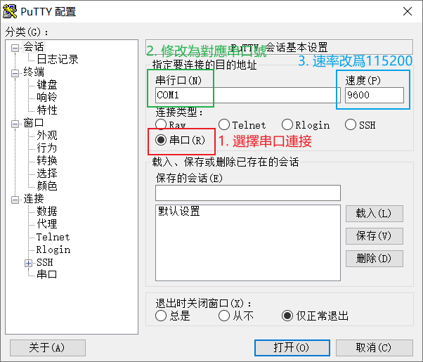
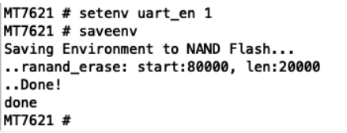
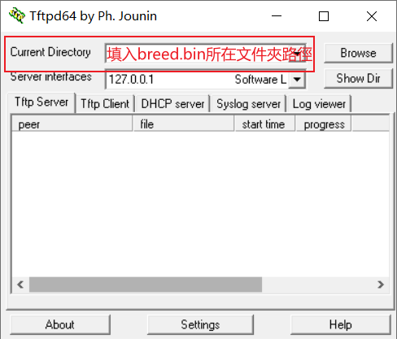
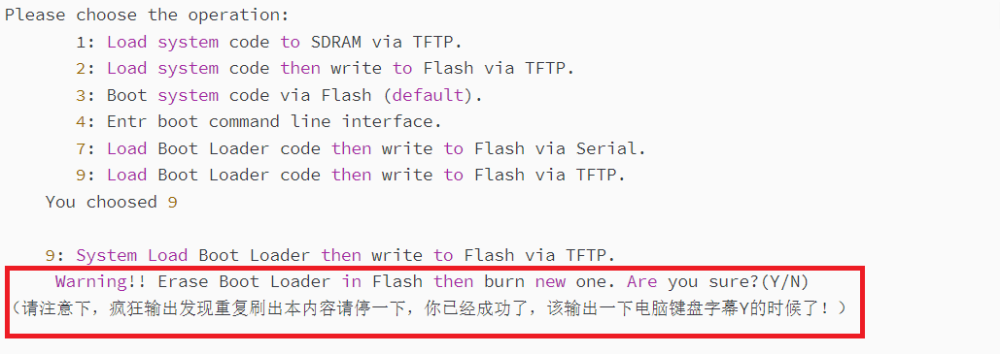
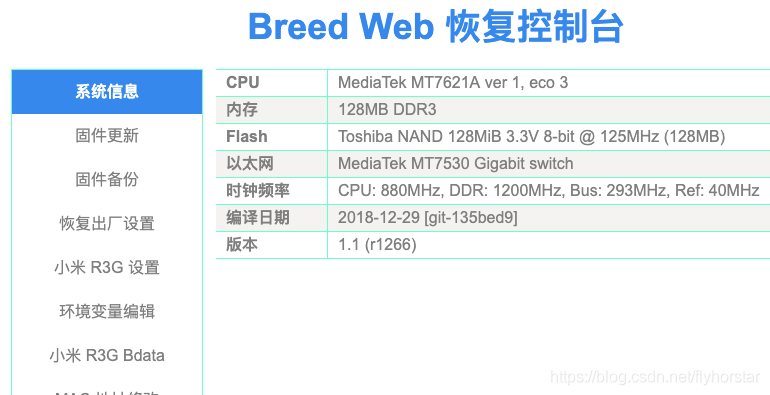
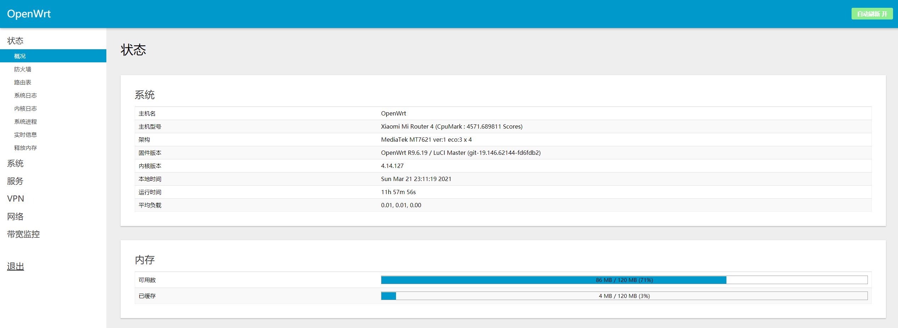

最近把家裏閑置的小米路由器4刷成OpenWrt系統，特此記錄流程。
聲明
刷機有風險，入坑需謹慎！刷機后無法官方維修！凡是刷第三方固件出现的财务损失由个人承担！
準備工具
網上能搜到很多免拆機刷OpenWrt的教程，但是親身測試過沒有成功所以放棄了。本文介紹的是利用TTL刷機的方法。需要的材料如下。
軟件列表：
1
2
3
4
5
|
1. CH340G USB TO TTL小板Windows10驅動；或者CP2102 USB TO TTL小板Windows10驅動；
2. Putty；
3. TFTPD64；
4. breed.bin - 引導固件
5. openwrt-ramips-mt7621-mir4-squashfs-factory.bin - OpenWrt固件
|
硬件列表：
1
2
3
4
5
6
7
|
1. USB TO TTL 小板一塊（CH340G或CP2102都行）
2. 杜邦綫3根；
3. 排針；
4. 電烙鐵1套；
5. 焊錫；
6. 松香；
7. 螺絲刀；
|
這裏我使用的是CP2102的板子。

以上軟件列表可從這裏下載。
拆機
- 先將路由器背面標簽紙下的螺絲移除，再沿著路由器邊將卡扣打開。

- 移除下圖藍色框内的兩個螺絲，以及綠框中2.4GHz天綫和橙色框中5GHz天綫，這樣就能將主板整個拆下。
- 在下圖紅框中有四個排針孔，爲了以後調試方便，我直接焊了四根排針，四根排針的端口分別為(從上到下): TX、GND、RX和空。其實在排針下方就有標記。

- 至此，拆機部分就完成了。
ShowTime
啓動路由器UBOOT命令行模式
- 將焊接好的排針用杜邦綫與TTL小板連接，連接順序如下：
- 路由器上TX脚連接TTL板上的RX脚；
- 路由器上RX脚連接TTL板上的TX脚；
- 路由器上GND脚連接TTL板上的GND脚；
- TTL板連接電腦，路由器通電。
- 電腦中打開
設備管理器查看TTL小板的串口號；
- 打開
Putty，選擇串口連接；修改TTL對應的端口號；速率改爲115200；打開。之後就能在Putty上看到路由輸出的一些信息了。

- 按著路由器上
Reset按鈕重置路由器，鬆開后，在Putty界面狂按數字$4$。
- 之後會進入UBOOT命令行模式，按順序輸入下面兩條指令
1
2
|
setenv uart_en 1
saveenv
|
- 之後會出現如下提示，就説明成功了。

刷入Breed引導固件
- 網綫連接路由器，在電腦端配置固定ip為
192.168.31.2（我使用默認網段）
- 打開
tftpd.exe，在current directory中配置breed.bin放置的文件夾；

- 路由器斷電后重新上電；
- 瘋狂按數字$9$，但看到下圖中紅框内提示即可，否則重來；

- 接著在
tftpd.exe窗口將Server interfaces選擇為路由器網關地址；在Putty中按下面方式輸入：
1
2
3
4
5
6
|
9: System Load Boot Loader then write to Flash via TFTP.
Warning!! Erase Boot Loader in Flash then burn new one. Are you sure?(Y/N)
Please Input new ones /or Ctrl-C to discard
Input device IP (192.168.31.1) ==:192.168.31.1(這裏填網關地址)
Input server IP (192.168.31.33) ==:192.168.31.2（這裏填電腦上配置的固定ip地址）
Input Uboot filename (uboot.bin) ==:breed.bin（填寫breed固件文件名）
|
- 回車，這時候就開始輸入breed引導固件，但出現下面提示則説明刷入成功。
1
2
3
4
5
6
7
8
9
10
11
12
13
|
TFTP from server 192.168.31.2; our IP address is 192.168.31.1
Filename 'breed.bin'.
TIMEOUT_COUNT=10,Load address: 0x80100000
Loading: Got ARP REPLY, set server/gtwy eth addr (00:xx:xx:xx:xx:xx)
Got it
#####################
done
Bytes transferred = 105490 (19c12 hex)
LoadAddr=80100000 NetBootFileXferSize= 00019c12
..ranand_erase: start:0, len:20000
.(5192)offs=0 piece=0 piece_size=105490 rc=0
Done!
|
- 之後路由器會重啓，在出現如下提示時，按任意鍵。
1
2
3
4
5
6
7
8
9
10
11
12
13
14
15
16
17
18
19
20
|
Boot and Recovery Environment for Embedded Devices
Copyright (C) 2018 HackPascal <hackpascal@gmail.com>
Build date 2018-12-29 [git-135bed9]
Version 1.1 (r1266)
DRAM: 128MB
Platform: MediaTek MT7621A ver 1, eco 3
Board: Xiaomi R3G
Clocks: CPU: 880MHz, DDR: 1200MHz, Bus: 293MHz, Ref: 40MHz
Environment variables @ 00060000 on flash bank 0, size 00020000
Flash: Toshiba NAND 128MiB 3.3V 8-bit (128MB) on mt7621-nfi.0
mt7621-nfi.0: Found Fact BBT at block 1023 (offset 0x07fe0000)
mt7621-nfi.0: Block 768 (offset 0x06000000) is marked as bad block in Fact BBT
rt2880-eth: MAC address from EEPROM is invalid, using default settings.
rt2880-eth: Using MAC address 00:0c:43:00:00:01
eth0: MediaTek MT7530 Gigabit switch
Network started on eth0, inet addr 192.168.1.1, netmask 255.255.255.0
Press any key to interrupt autoboot ... 4
|
- 將電腦端ip改回自動獲取，打開瀏覽器輸入
192.168.1.1，如果出現下面界面説明breed引導成功。

- 至此，刷入
openwrt固件的前期準備工作完成。之後操作就非常簡單了。
刷入OpenWrt
Openwrt固件可以在網上搜索到，也可自行編譯，建議自行編譯，因爲Openwrt源碼中可以支持小米路由器4的MT7261平臺，自行編譯可以根據需求選擇默認安裝的插件。這裏提供一個別人編譯好的openwrt固件，親測算比較好的，但是還是有一個缺點（V2Ray的url無法配置，所以之後我會自行編譯一個固件放出）。
time: 2021-08-07
填個坑，最近有時間自己編譯了Lean的Openwrt固件，並測試無線、V2Ray等功能，能夠滿足自己的需求，有需要者自行取用，點擊下載。編譯過程非常簡單，建議利用Docker或虛擬機搞個新系統，然後按照大佬Github上教程做就行。
下面先開始刷入這個固件吧。
- 先備份現有固件，裏面有EEEROM和固件兩個，都要備份（之前看了一篇博文介紹原因，現在找不到了，等找到后貼上，但是最重要的一句話就是"一定要先備份”）。
- 備份結束后就可以更新固件了，直接上傳固件，重啓路由器，見證奇跡吧！
網上有的博文說刷入OpenWrt后會有地址問題，但我沒有遇到所以也就不詳細説了。另外自行編譯openwrt固件也非常簡單，網上教程很多，唯一注意的就是編譯時的網絡環境有要求。
最後看看刷入的Openwrt後臺管理界面。

參考博文
感謝各位大神提供的方法和固件。本博文參考以下幾篇博文完成。
[1] 小米路由器4刷breed, pandavan，openwrt
[2] 小米路由器R4 TTL刷不死Bread第三方固件写入升级
[3] 小米路由器4 刷Openwrt踩坑记录 (未完待续…)
[4] 小米路由4 R4 OpenWrt 固件
[5] [AX3PRO] 第三方openwrt小米路由器系列固件 R3G R4 R3Pro mini